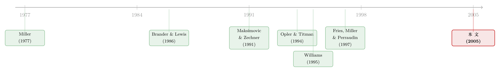

行业到底怎样塑造了一家公司的资本结构？
本文读的是 MacKay & Phillips (2005, Review of Financial Studies)：在竞争性制造业里，决定一家公司杠杆的，并不是「它属于哪个行业」这件事本身（行业固定效应只解释了 13% 的杠杆变异），而是它在行业里所处的位置——它的技术离行业中位数有多远、同行在怎么动、它是新进入者还是要退出的人。资本结构、技术与风险，是在行业均衡里被同时定下来的。
1 一个被「扫掉」的东西，其实是问题本身
做实证公司金融的人，几乎都做过同一个动作：在回归杠杆的方程里塞一堆行业虚拟变量，或者干脆把每个变量减掉它的行业均值，然后宣布——好了，行业固定效应已经控制住了，剩下的变异才是我真正关心的「公司特征」。
这个动作背后藏着一个从没被认真追问的假设：行业的作用，就是一个可以被一键「扫掉」（sweep out）的水平项。仿佛同一个行业里的公司，本该有一个共同的杠杆「靶子」，谁偏离了，谁就该被均值回归拉回来。
可是，Myers (1984) 把资本结构称作「谜」（the financial structure puzzle）已经过去二十年，Harris & Raviv (1991) 也综述过这条文献，有一件事却始终没被解释清楚：为什么同一个行业内部，公司之间的杠杆差异，会比行业之间的差异还要大得多？如果行业真有一个最优资本结构，这种「同行不同命」就成了一桩说不通的事。
MacKay 和 Phillips 这篇文章，干的就是把那个被习惯性扫掉的东西，重新捡回来仔细看。他们先用最朴素的方差分解给读者当头一棒：把公司层面的杠杆对行业中位数做回归，行业固定效应只能解释 13% 的杠杆变异；相比之下，公司固定效应解释了 54%，剩下 33% 是公司内部（within-firm）随时间的变化。
换句话说，你辛辛苦苦控制掉的那个「行业」，其实是这桌牌里最小的一张。真正的故事，全藏在被你当成残差扔掉的「行业内部」那一大块里。
这正是石川式的开场：你以为自己在控制噪声，其实你扔掉的恰恰是信号。问题不是「行业重不重要」，而是「行业是怎样重要的」。
2 行业重要，但不是你以为的那种重要
于是，一个自然的问题是：既然行业固定效应这么弱，那「行业」到底通过什么渠道在影响一家公司的杠杆？
作者的答案，借自一条不算主流、却极漂亮的理论线索——竞争性行业均衡 (competitive-industry equilibrium) 模型。这条线索的精神源头是 Miller (1977)《Debt and Taxes》：单看一家公司，发债似乎总有税盾的好处；可一旦把所有公司加总到市场层面，债务的边际收益会被均衡价格抹平，资本结构反而变得「无关」。
Maksimovic & Zechner (1991) 把这套「加总即反转」的逻辑搬进了产品市场。他们让公司在两种技术之间选：一种是边际成本确定的「安全」技术，一种是成本不确定的「风险」技术。在局部均衡 (partial equilibrium) 里，没人会发债——因为股东会借着风险技术去掏空债权人。但每家公司其实都有动机去发债 + 上风险技术，因为风险技术能让你在好年景多产、坏年景少产，期望利润和风险都更高。问题在于：当越来越多公司都涌向风险技术，产品价格会越来越紧贴那种技术的边际成本，于是风险技术变得既不那么险、也不那么赚。均衡发生在两种技术的期望价值相等、公司在「高债高险」和「低债低险」之间无差异的那一点。
这套逻辑推出两个极其关键、又可以拿去做实证的含义：
第一，「天然对冲」(natural hedge)。 技术越接近行业中位数的公司，现金流风险越低，因而用的债也越少；越偏离行业技术核心的公司，反而要靠更多债务。
第二，相互抵消的调整。 为了维持均衡，同一行业内的公司会对债务和技术做相向的调整——你加债，我就减债。行业不是把大家拉向同一个靶子，而是恰恰相反，均衡的产物是行业内部的「多样性」，而不是同质性。
接着，Williams (1995) 和 Fries, Miller & Perraudin (1997) 把这套静态故事做成了动态的：允许公司内生地进入、退出。Williams 预言行业会长成一个不对称的结构——一小撮又大又稳、又赚钱、又资本密集、又高杠杆的「核心」公司，外围环绕着一圈又小又险、不赚钱、劳动密集的「边缘」公司。Fries-Miller-Perraudin 则用或有索取权 (contingent-claims) 方法证明：公司进入行业之后，会随着时间向上调整自己的杠杆。
这些模型的共同主题只有一句话：一家公司的债务、技术、风险决策，是在行业里被同时决定的，而决定它的，是它在行业里占的那个位置。
3 怎样把「位置」量出来：天然对冲的构造
但真正关键的一步在于：「行业位置」是个抽象词，怎样把它变成一个能塞进回归的变量？
作者的核心做法，是为 Maksimovic-Zechner 的「天然对冲」造一个代理变量。他们要求这个代理满足三条：(1) 要反映公司的生产技术；(2) 要度量公司技术与行业典型技术之间的距离；(3) 要能跨行业比较。技术用资本—劳动比 (capital–labor ratio, K/L) 来量——这正是 Williams (1995) 模型里那个被显式建模的变量。典型技术，则定义为该行业—年份里、以销售份额加权、且剔除公司自身的 K/L 中位数。
天然对冲取的是公司 K/L 与行业中位数之差的绝对值——因为对冲只关心你离中位数有多远，不关心你是偏高还是偏低。再除以该行业—年份内所有偏离的全距 (range)，把它压进 [0,1]，从而可跨行业比较。最后，为了读起来顺手，用 1 去减它：NH = 1 表示公司技术与行业中位数完全一致，NH = 0 表示离得最远。
写成代数形式，就是论文里那个核心的构造：
这里 f 表示公司、i 表示行业、y 表示年份。注意中位数下标里的 ≠ f——剔除公司自身，是为了不把一个机械的相关性「焊死」进分析里。这个细节贯穿全文：凡是用到「同行」的量，作者都把公司自己摘出去。
可是，光靠 K/L 这一根轴，会不会漏掉公司在行业里位置的其他维度？于是作者又加了第二组「位置」变量：组内变化 (intra-quantile change) 与组外变化 (extra-quantile change)。把行业按因变量的滞后水平切成两半，公司所在那一半里（剔除自身）其他公司因变量的平均变化，就是组内变化；另一半的平均变化，就是组外变化。这两个量，正是用来直接检验 Maksimovic-Zechner 那条「相向调整」的预言——如果同行加了杠杆，我会不会反手减杠杆？
（关于「同行的财务政策会不会互相传染、又该怎样把这种传染干净地量出来」，可参见《同行不是均匀的一团：把「资本结构会传染」这件事，重新量了一遍》。）
4 识别策略：把「同时决定」当真
如果只是把天然对冲塞进一个杠杆回归，那这篇文章不过又是一篇「找到一个新解释变量」的论文。它真正的野心在于把理论那句「债务、技术、风险同时被决定」当真——既然三者互为因果，就不能只估一个方程。
所以作者的主回归是一组联立方程 (simultaneous-equation)：财务杠杆、资本—劳动比、现金流波动率，同时是被解释变量，又互为对方方程里的解释变量。识别上他们要同时对付两件麻烦事——公司固定效应和内生性偏误——用的是 Whited (1992) 在面板 GMM 里给出的那套办法：
- 公司固定效应：对所有公司层面变量做一阶差分 (first-differencing)，把不随时间变的公司异质性消掉；同时再控制交互的行业—年份固定效应 (interacted industry-year fixed effects)。
- 内生性：用 广义矩估计 (generalized method of moments, GMM)，以变量的二阶滞后水平值 (second lags in levels) 作为工具变量，既反映各方程残差之间的相关，又给右手边的内生变量找了工具。
代价是样本会缩水——没有至少两期滞后的观测最终都掉了出去。这是一桩诚实的取舍：滞后取得越多，越能压内生性，但损失观测、损失统计功效，还会引入大公司和幸存者偏误。
控制变量则是资本结构文献的「老面孔」：盈利能力、公司规模（总资产对数）、多元化、托宾 Q——目的是确保「行业位置」这几个变量不只是在偷偷捡静态权衡 (static trade-off) 和啄食顺序 (pecking-order) 理论的漏。
5 数据：把竞争和集中切得干干净净
数据来自 WRDS 合并的 COMPUSTAT–CRSP。财务与经营变量用 COMPUSTAT；行业分类则特意用 CRSP 的历史分类（因为 COMPUSTAT 只报当前分类）；多元化的赫芬达尔则靠 COMPUSTAT 的分部 (business-segment) 文件算，这把样本期限定在 1981–2000。
两个识别上很讲究的细节：
其一，公司退出怎么定义。作者用 COMPUSTAT 的「删除原因」字段（note 35），把真正的退出（Chapter 11 破产、Chapter 7 清算）和仅仅因为重组导致 CUSIP 变更区分开——这才使得检验 Williams、Fries-Miller-Perraudin 那套「进入/退出」的动态模型成为可能。
其二，行业集中度用的是外部指标：来自《Census of Manufacturers》的四位 SIC 行业 HHI（1982、1987、1992、1997 各一次）。用外部指标而非「COMPUSTAT 上有几家公司」，一来覆盖更广、能降低选择偏误，二来 HHI 本就是司法部 (DOJ) 用来执行竞争政策的尺子，对政府和公司都可见。
按 DOJ 的口径，HHI < 1000 为竞争性，HHI > 1800 为集中性，中间那段「中度集中」被直接剔除，好让两组形成鲜明对照。样本只留制造业（SIC 2000–3990），并剔掉末两位为 99 的「杂项」行业。一通清洗（删负销售/负资产、托宾 Q > 10、杠杆出 [0,1] 区间等）之后，最终是一个高度不平衡的面板：竞争性样本 3074 家公司、17,140 个公司—年，分布在 315 个竞争性行业；集中性样本 309 家公司、1630 个公司—年，分布在 46 个集中性行业。
杠杆用的是账面杠杆 (book leverage) = 总债务 / 总资产。这一选择作者交代得很坦诚：Graham & Harvey (2001) 的问卷说经理人定资本结构时盯的是账面值，Barclay, Morellec & Smith (2003) 也论证过账面杠杆在回归里理论上更优；但 Welch (2004) 反对、Fama & French (2002) 发现账面与市值杠杆结果迥异。于是作者老老实实地用市值杠杆又跑了一遍做稳健性。
6 主要结果：位置定杠杆，竞争与集中两副面孔
把这些拼到一起，结论就出来了，而且分成对照鲜明的两半。
在竞争性行业里，三件事都成立：
- 天然对冲显著为负——技术越靠近行业中位数（
NH越接近 1）的公司，用的杠杆越少。这正是 Maksimovic-Zechner 的核心预言：站在技术核心的公司享有一份「天然的对冲」，现金流更稳，于是不需要那么多债。 - 相向调整成立——公司对自己各项实物与财务特征的变化，与同行对同一变量的变化反向相关。同行加杠杆，我减杠杆；这与 Maksimovic-Zechner 那套「均衡迫使公司对共同冲击做出不同反应」的调整模式吻合。
- 联立性在经济上、而不只是计量上重要——一旦把三个决策的同时性纳进来，杠杆、K/L、现金流波动率之间的多重关系都会改变。作者反复强调：考虑联立，不是为了计量上的好看，而是因为忽略它会让你对这些关系的判断本身出错。
在集中性行业里，故事反转：
- 天然对冲既不统计显著、也不经济显著——这恰好印证了竞争性均衡模型「在集中行业里水土不服」。
- 但同行—自身的敏感度大得多——集中行业里，自己的决策对同行决策的反应强烈得多，这与寡头里「策略性互动」举足轻重相一致。
- 此外，集中行业的杠杆整体更高、且离散度更小——这与「大家盯着彼此报价、抱团靠拢」的图景一致，正好和竞争行业里「均衡维持多样性」形成镜像。
至于 Williams 和 Fries-Miller-Perraudin 那套更精巧的动态进入/退出模型，证据则要弱得多。公司向行业中位数的回归虽然统计显著，但经济上无足轻重；公司特征演化得很慢，倾向于保住自己在行业里的排名；在岗公司 (incumbents) 沿实物与财务维度的位置高度持久——这反过来暗示，行业均衡力量也许是在维系行业内部的多样性，而不是把它抹平。但多元回归里，在岗者和进入者之间并没有什么重要差别。于是作者的判断很克制：静态的 Maksimovic-Zechner 模型有支持，更复杂的动态模型只有有限支持。
这篇文章最妙的反转在于：行业的作用，不是把公司拉向一个共同的靶子，而是给每家公司按位置分配了不同的杠杆。所谓「行业内部的巨大差异」，恰恰不是噪声，而是均衡本身的样子。
7 文献脉络
把这条线索捋一捋，它的演进其实很清楚。
源头是 Miller (1977)：在加总到市场层面后，资本结构的税盾收益被均衡抹平，杠杆「无关」。早期把金融与产品市场接起来的理论——Brander & Lewis (1986) 的有限责任效应、以及 Maksimovic (1988) 的重复寡头——处理的都是集中行业里的对称公司，因而解释不了为什么竞争的公司会选不同的资本结构。

真正的转折是 Maksimovic & Zechner (1991)：把 Miller 的「加总即反转」搬进竞争性行业，第一次让「天然对冲」和「相向调整」成为可检验的命题。Williams (1995) 与 Fries, Miller & Perraudin (1997) 接着把它动态化，内生进入退出，预言出「核心—边缘」的不对称行业结构。与此并行的实证一侧，Opler & Titman (1994) 发现高杠杆公司在负向行业冲击后会丢市场份额，Phillips (1995)、Kovenock & Phillips (1995, 1997) 则证明财务结构会反过来约束不完全竞争行业里的实物决策。
MacKay & Phillips (2005) 所处的位置，是把这条「行业均衡」的理论线索，第一次系统地搬到公司层面的横截面与面板数据上做检验——而且不是去做某一个模型对另一个模型的结构性对决，而是检验它们共同的主题：实物与财务决策在行业里被同时决定，且由公司的行业位置驱动。
8 一个被联立性改写的细节
值得单独点出的，是「联立 vs. 单方程」这件事在本文里不是装饰。作者明确做了对照：把同样的关系分别用单方程和联立方程估一遍。结论是——忽略同时性，会让你对杠杆、资本密集度、现金流波动率三者之间关系的符号与量级判断出错。这一点对今天仍在大量使用「单方程回归杠杆」的实证研究，是一句分量很重的提醒：当你的右手边变量和左手边变量本就是一起被决定的，你估出来的那个系数，到底在说什么？
9 评论与延伸（Q&A + 研究方向）
(a) 几个可能的疑问
Q：天然对冲只用 K/L 一根轴来量，会不会太单薄？
作者自己也承认这个隐忧，这正是他们额外加入「组内/组外变化」来从另一个角度捕捉行业位置的原因。但坦率说，K/L 既能反映资本密集度，也会混入资产可抵押性、经营杠杆等多重信息——
NH显著为负，未必纯粹是「技术对冲」在起作用。这是这篇文章识别上最软的一环。
Q：那个 13% 是不是被「竞争性制造业」这个样本限制夸大或缩小了？
很可能被影响。样本只留了 HHI<1000 的制造业，并剔掉中度集中段。行业固定效应在更广样本（含服务业、含集中行业）里的解释力未必还是 13%。这个数字是「在竞争性制造业里」的结论，不宜直接外推成「行业整体不重要」。
Q：用二阶滞后水平做工具变量，外生性可信吗？
这是动态面板 GMM 的标准做法（Whited 1992 一脉），合法性取决于「滞后水平与当期一阶差分的扰动项不相关」这一矩条件。在杠杆、K/L、波动率高度持久的情形下，弱工具是真实的隐患——作者也提到滞后阶数是一桩在内生性、功效与幸存者偏误之间的权衡。
Q：「相向调整」会不会只是一个机械的横截面恒等式？
作者用了两道防线来排除这种机械相关：一是中位数和组内均值都剔除公司自身，二是用滞后水平构造分组、对变量做一阶差分。但同一行业的公司同时面对共同冲击，反向相关仍可能部分来自共同冲击下的异质反应而非真正的策略性调整——这两者在数据里很难干净地分开。
Q：账面杠杆 vs. 市值杠杆，会不会翻盘？
作者用市值杠杆重跑并称主要结论不变，这点比当年很多论文要诚实。但鉴于 Fama-French (2002) 发现两者结果可以「截然不同」，读者仍应把核心结论理解为「在账面口径下稳健、市值口径下大体成立」，而非两种口径完全等价。
Q：集中行业里天然对冲失效，是模型错了，还是代理变量错了？
两种解释都讲得通，文章无法完全区分。作者倾向于前者——竞争性均衡模型本就不该适用于寡头，而集中行业里更强的同行敏感度恰好支持「策略互动」主导。但也不能排除：在只有几家大公司的行业里，K/L 中位数本身估得很噪、
NH失去信噪比。
(b) 几个可能的研究问题与提案
1. 把「天然对冲」搬到公司债市场，看它定不定价。
【经济故事】如果靠近行业技术核心的公司现金流真的更稳，那它的违约风险也该更低——这应当体现在信用利差上，而不只是体现在杠杆选择上。换句话说，天然对冲若为真，债券投资者应当为「技术居中」的公司要更低的利差。 【可行性】中。用 TRACE 公司债成交 +
COMPUSTAT算NH，控制评级、久期、杠杆后看利差。难点在于把NH与杠杆的内生性分开，且行业层面的中位数在债券发行人样本里更稀疏。
2. 外资持有人会不会打破「相向调整」的均衡？
【经济故事】Maksimovic-Zechner 的相向调整，假定公司都在盯着本行业本国的同行。可一旦行业里进来一批跨境、被动配置的外资持有人，它们的需求未必随本地行业冲击反向调整，可能反而把同行的杠杆「焊」在一起。这能直接检验「均衡维系多样性」是否会被全球化的持有人结构侵蚀。 【可行性】中。需要 FactSet/13F 类持股 + 行业 HHI + 杠杆面板，用指数纳入等准自然实验给外资份额找外生变化。识别可行，但把「持有人结构」与「行业均衡调整」串成一条干净的因果链有难度。
3. 用更现代的交错 DiD 重估「进入/退出」的动态预言。
【经济故事】本文对 Williams、Fries-Miller-Perraudin 的动态模型只找到有限支持，部分原因可能是当年的方法把「进入后逐年上调杠杆」的动态压缩进了静态对照。用事件时间 + 现代异质性稳健估计量重看「进入行业后杠杆的演化路径」，也许能救回一部分动态预言。 【可行性】高。数据就是公司进入/退出 + 杠杆面板，方法是成熟的事件研究。主要风险是进入/退出本身的内生性（不是随机的）。
4. 行业集中度上升的长期趋势，如何改写了天然对冲的作用？
【经济故事】美国诸多行业近二十年集中度持续上升。既然本文发现「集中行业里天然对冲失效、策略互动主导」，那么随着行业整体走向集中，资本结构的决定机制是否正在从「位置驱动」系统性地切换到「策略驱动」？ 【可行性】中。把样本期延长到 2000 年之后、用滚动的 Census HHI，做「机制随集中度变化」的交互检验。数据可得，难在集中度本身与技术变革、无形资本上升等同时发生，难以归因。
5. 把「现金流波动率」这条方程换成更干净的风险度量。
【经济故事】本文用经营现金流标准差作风险，但这个度量既含技术风险也含需求风险。若能用期权隐含波动率或资产波动率（结构模型反推）替换，或许能更干净地检验「核心公司风险更低 → 杠杆更低」这条链。 【可行性】中。需要把样本限制在有上市期权/可估资产波动率的公司，样本会缩小且偏向大公司，与本文「核心—边缘」的设定恰好有张力。
10 我的判断
这篇文章的贡献，在我看来不在于「又发现了一个解释杠杆的变量」，而在于它改变了我们追问问题的方式：行业不是一个可以一键扫掉的水平项，而是一套给每家公司按位置分配杠杆的均衡机制。13% vs. 54% 这个方差分解，单独拎出来就值得每一个还在机械地塞行业虚拟变量的人停下来想一想——你以为控制掉的，恰恰是问题本身。把竞争性均衡理论第一次系统地拉到公司面板上检验，并诚实地报告「静态模型成立、动态模型只有有限支持」，这种克制本身就很可贵。
对识别，我最大的保留有两处。其一是天然对冲全靠 K/L 一根轴，它太容易同时承载技术、可抵押性、经营杠杆等多重含义，NH 的负号很难被干净地归因到「技术对冲」这一条机制。其二是联立方程 GMM 对工具（二阶滞后水平）外生性的依赖——在这些高度持久的变量上，弱工具的隐患是真实的，文章的经济量级因此该被谨慎对待。
往后我最想看到的，是把这套「行业位置」的视角接到信用市场和持有人结构上：如果天然对冲真能压低现金流风险，它就该在债券利差里留下指纹；而如果行业均衡靠「同行相向调整」维系，那么把一批不随本地行业冲击调整的外资被动持有人放进来，这个均衡会不会被悄悄改写？这正是这篇二十年前的论文，留给今天公司债与外资研究的一道好题。
参考文献
- Bradley, M., G. A. Jarrell, and H. Kim (1984). On the Existence of an Optimal Financial Structure. Journal of Finance 39(3), 857–878.
- Brander, J. A., and T. Lewis (1986). Oligopoly and Financial Structure: The Limited Liability Effect. American Economic Review 76(5), 956–970.
- Fama, E. F., and K. R. French (2002). Testing Trade-Off and Pecking Order Predictions About Dividends and Debt. Review of Financial Studies 15(1), 1–33.
- Fries, S., M. Miller, and W. Perraudin (1997). Debt in Industry Equilibrium. Review of Financial Studies 10(1), 39–67.
- Graham, J., and C. Harvey (2001). The Theory and Practice of Corporate Finance: Evidence from the Field. Journal of Financial Economics 60, 187–243.
- Harris, M., and A. Raviv (1991). The Theory of Financial Structure. Journal of Finance 46, 297–355.
- MacKay, P., and G. M. Phillips (2005). How Does Industry Affect Firm Financial Structure? Review of Financial Studies 18(4), 1433–1466.
- Maksimovic, V., and J. Zechner (1991). Debt, Agency Costs, and Industry Equilibrium. Journal of Finance 46, 1619–1643.
- Miller, M. H. (1977). Debt and Taxes. Journal of Finance 32, 261–275.
- Myers, S. (1984). The Financial Structure Puzzle. Journal of Finance 39, 575–592.
- Opler, T., and S. Titman (1994). Financial Distress and Corporate Performance. Journal of Finance 49(3), 1015–1040.
- Phillips, G. M. (1995). Increased Debt and Industry Product Markets: An Empirical Analysis. Journal of Financial Economics 37, 189–238.
- Welch, I. (2004). Capital Structure and Stock Returns. Journal of Political Economy 112, 106–131.
- Whited, T. M. (1992). Debt, Liquidity Constraints and Corporate Investment: Evidence from Panel Data. Journal of Finance 47, 1425–1460.
- Williams, J. (1995). Financial and Industrial Structure with Agency. Review of Financial Studies 8(2), 431–474.